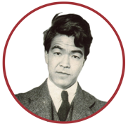

Yashiro and Berenson
Art history between Japan and Italy
Toggle navigation
About
A few words (Lino pertile)
Letter (Wakaba Yashiro)
The Yashiro-Berenson Correspondence (Michiaki Koshikawa)
Introduction (Jonathan K. Nelson)
Colophon
Letters
People
Images
Texts by Yashiro
My Life in the Fine Arts (Tokyo: 1972)
Sandro Botticelli (London and Boston: 1925)
Studies on Yashiro
Hatcher, "Yashiro, Binyon and Waley"
Takagishi, "A Japanese Historian of Western Art"
Yamanashi, "Yashiro and the Institute of Art Research"
Berenson
Gorman, "Berenson’s Appreciation of Japanese Art"
Strehlke, "Bernard Berenson and Asian Art"